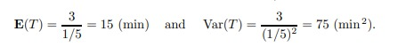

Gamma Distribution
A debitage concept of statistics
Gamma Distribution
A probability distribution is the mathematical function that gives the probabilities of occurrence of different possible outcomes for an experiment. a two Parameter continuous distribution which follows gamma function is called gamma distribution
-
It’s a continuous distribution
-
It’s 2 parameter distribution
It is used to predict the wait time until future events occur. As we shall see the parameterization below, Gamma Distribution predicts the wait time until the k-th (Shape parameter) event occurs.
When a certain procedure consists of α independent steps, and each step takes Exponential (λ) amount of time, then the total time has Gamma distribution with parameters α and λ.
Exmaple :
Users visit a certain internet site at the average rate of 12 hits per minute. Every sixth visitor receives some promotion that comes in a form of a flashing banner. Then the time between consecutive promotions has Gamma distribution with parameters α = 6 and λ = 12.
Gamma related to Others
The gamma, exponential, and Poisson distributions all model different characteristics of a Poisson process. All these distributions can use lambda as a parameter, which represents that average rate of occurrence.
The gamma distribution models the time between events. Time is a continuous variable, and the gamma distribution is, likewise, a continuous probability distribution. Conversely, the Poisson distribution models the count of events within a set amount of time. A count is a discrete variable and the Poisson distribution is a discrete probability distribution.
The gamma and exponential distributions are equivalent when the gamma distribution has a shape value of 1. Remember that the shape value equals the number of events and the exponential distribution models times for one event. Therefore, a gamma distribution with a shape = 1 is the same as an exponential distribution.
For example, a gamma distribution with a shape = 1 and scale = 3 is equivalent to an exponential distribution with a scale = 3
Gamma (1, λ) == Exponential (λ)
Real Life Exmaples
- Corona Virus Patients
- Load on Server Computer
- Waiting Time in Reservation
- The amount of rainfall accumulated in a reservoir(Dam).
- Flow of items through manufacturing and distribution processes.

Dependencies(Gamma Function)
To define the family of gamma distributions, we first need to introduce a function that plays an important role in many branches of mathematics like solving the hard integrals.
For α>0 , the gamma function is defined by

Most important properties of gamma function is following:
-
For any α>0, Γ(t+1) = (t)Γ(t)
-
For any positive integer t, Γ(t) = (t-1)!
-
Γ(1/2) = √π
Probablity Desity Function(PDF)
It is a two-parameter continuous probability distribution.The derivation of which from Gamma Function we will see. The commonly used parameterizations are as follows-
- Shape parameter = k and Scale parameter = θ.
- Shape parameter α = k and an Inverse Scale parameter β = 1/θ called a Rate parameter. In exponential distribution, we call it as λ (lambda, λ = 1/θ) which is known as the Rate of the Events happening that follows the Poisson process. While k is the number of events until which we are waiting for the expected event to occur.
- Shape parameter = k and a Mean parameter μ = k*θ = α/β.

Using the parameters as k (k>0) and θ (λ = 1/θ) where λ is the rate of the event, we can write the PDF of the Gamma Distribution as–

Therefore, a random variable X is eventually denoted b

Constants
Mean
Varience
CDF
MGF
Question 1:
Imagine you are solving difficult Maths theorems and you expect to solve one every 1/2 hour. Compute the probability that you will have to wait between 2 to 4 hours before you solve four of them.
One theorem every 1/2 hour means we would suppose to get θ = 1 / 0.5 = 2 theorem every hour on average. Using θ = 2 and k = 4, Now we can calculate it as follows
Question 2:
Compilation of a computer program consists of 3 blocks that are processed sequentially, one after another. Each block takes Exponential time with the mean of 5 minutes, independently of other blocks.
- (a) Compute the expectation and variance of the total compilation time.
- (b) Compute the probability for the entire program to be compiled in less than 12 minutes.
Solution: The total time T is a sum of three independent Exponential times, therefore, it has Gamma distribution with α = 3. The frequency parameter λ equals (1/5) min−1 because the Exponential compilation time of each block has expectation 1/λ = 5 min.
(a) For a Gamma random variable T with α = 3 and λ = 1/5
(b) A direct solution involves two rounds of integration by parts,